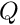
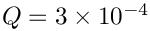
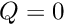
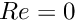

This tutorial demonstrates the use of unstructured meshes in 2D fluid-structure interaction problems with adaptivity. The formulation is extremely similar to that used in unstructured fsi without adaptivity, but the geometry of the problem is closely related to the flow in a channel with a leaflet using structured adaptivity.
The solid mechanics problem is exactly the same as that described in the unstructured solid mechanics with adaptivity tutorial. The fluid mechanics problem is new, but is a simple extension of the previous problems. The key realisation is that the unstructured refinement can take place independently for the fluid and solid domains provided that the common boundary between them has a common parametrisation. Moreover, the common boundary must have the same parametrisation in order for the fluid-structure interaction to be set up in the first place. Thus, setting up unstructured adaptivity for fsi problems is no more difficult than setting up the original unstructured problem using oomph-lib's inline unstructured mesh generation procedures.
The problem
The figure below shows a sketch of the problem. A 2D channel is partly obstructed by an elastic bar and has an imposed parabolic inlet velocity profile.

Sketch of the problem showing fluid and solid boundary
The non-dimension formulation is the same as described in the related non-adaptive problem. The fluid structure interaction parameter  is the ratio of viscous fluid stress to the reference stress (Young's modulus) of the solid.
Results
The figure below shows streamlines and pressure contours for the steady solution when  and 

The flow field (streamlines and pressure contours) and the deformation of the elastic obstacle.
Overview of the implementation
The implementation is exactly the same as described in the non-adaptive unstructured mesh fluid-structure interaction problem. The only difference is that the meshes are constructed using oomph-lib's inline mesh generation procedures.
For simplicity the common boundaries between the fluid and solid mesh are assigned the same boundary ids, but this is not necessary. The boundary ids for each domain are shown in the sketch above.
Problem Parameters
The various problem parameters are defined in a global namespace. We define the Reynolds number,  , and the FSI interaction parameter
, and the FSI interaction parameter  .
.
We specify the Poisson ratio of the solid and provide a pointer to the constitutive equation for the solid.
The Poisson's ratio and pointer to a constitutive law for the mesh deformation is specified separately.
The driver code
We set an output directory, trace file and instantiate the constitutive laws for the real and mesh solid mechanics computations with the appropriate Poisson ratios:
DocInfo doc_info;
doc_info.set_directory("RESLT");
std::ofstream trace("RESLT/trace.dat");
We then create the Problem object and output the initial guess for the solution
ProjectableTaylorHoodElement<
PseudoSolidNodeUpdateElement<TTaylorHoodElement<2>, TPVDElement<2,3> > >,
ProjectablePVDElement<TPVDElement<2,3> > >
problem;
doc_info.number()++;
Initially  and , so the solid should remain undeformed and the fluid problem is linear. We expect to obtain the solution in one Newton iteration and so we perform one steady solve with the default mesh and output the result. We also output the strain energy of the solid and dissipation of the fluid as global measures of the solution that can be used for validation. (The unstructured meshes generated are not guaranteed to be exactly the same on different computers.)
doc_info.number()++;
problem.output_strain_and_dissipation(trace);
Finally, we perform a parameter study by increasing , computing the result with one round of adaptivity and then writing the results to output files.
for(unsigned i=0;i<n_step;i++)
{
problem.Fluid_mesh_pt->set_lagrangian_nodal_coordinates();
doc_info.number()++;
problem.output_strain_and_dissipation(trace);
}
The Problem class
The Problem class has a constructor, destructor and a post-processing member function. The class also includes the standard member functions actions_before_adapt() and actions_after_adapt(). There are private member functions that create and destroy the required FSISolidTractionElements that apply the load from the fluid on the solid and the ImposeDisplacementByLagrangeMultiplierElements that are used to (weakly) align the boundary of the fluid mesh with the solid domain. There are also private member functions to compute the fluid dissipation, solid strain energy and a public member function that outputs the computed strain and dissipation to a specified trace file.
The class provided storage for pointers to the Solid Mesh, the Fluid Mesh and vectors of pointers to meshes of FaceElements on the boundaries over which the interaction takes place. There is also storage for the GeomObject incarnations of fsi boundaries of the solid mesh and polygonal representations of the boundaries of the fluid and solid meshes.
The Problem constructor
We start by building the solid mesh, an associated error estimator and then writing the boundaries and mesh to output files. These steps are exactly the same as in the unstructured adaptive solid mechanics tutorial.
template<class FLUID_ELEMENT, class SOLID_ELEMENT>
{
double x_inlet = 0.0;
double channel_height = 1.0;
double channel_length = 4.0;
double x_leaflet = 1.0;
double leaflet_width = 0.2;
double leaflet_height = 0.5;
Vector<TriangleMeshCurveSection*> solid_boundary_segment_pt(4);
Vector<Vector<double> > bound_seg(2);
for(unsigned i=0;i<2;i++) {bound_seg[i].resize(2);}
bound_seg[0][0]=x_leaflet - 0.5*leaflet_width;
bound_seg[0][1]=0.0;
bound_seg[1][0]=x_leaflet - 0.5*leaflet_width;
bound_seg[1][1]=leaflet_height;
unsigned bound_id = 0;
solid_boundary_segment_pt[0] = new TriangleMeshPolyLine(bound_seg,bound_id);
bound_seg[0][0]=x_leaflet - 0.5*leaflet_width;
bound_seg[0][1]=leaflet_height;
bound_seg[1][0]=x_leaflet + 0.5*leaflet_width;
bound_seg[1][1]=leaflet_height;
bound_id = 1;
solid_boundary_segment_pt[1] = new TriangleMeshPolyLine(bound_seg,bound_id);
bound_seg[0][0]=x_leaflet + 0.5*leaflet_width;
bound_seg[0][1]=leaflet_height;
bound_seg[1][0]=x_leaflet + 0.5*leaflet_width;
bound_seg[1][1]=0.0;
bound_id = 2;
solid_boundary_segment_pt[2] = new TriangleMeshPolyLine(bound_seg,bound_id);
bound_seg[0][0]=x_leaflet + 0.5*leaflet_width;
bound_seg[0][1]=0.0;
bound_seg[1][0]=x_leaflet - 0.5*leaflet_width;
bound_seg[1][1]=0.0;
bound_id = 3;
solid_boundary_segment_pt[3] = new TriangleMeshPolyLine(bound_seg,bound_id);
Solid_outer_boundary_polyline_pt =
new TriangleMeshPolygon(solid_boundary_segment_pt);
double uniform_element_area= leaflet_width*leaflet_height/20.0;
TriangleMeshClosedCurve* solid_closed_curve_pt=
Solid_outer_boundary_polyline_pt;
TriangleMeshParameters triangle_mesh_parameters_solid(
solid_closed_curve_pt);
triangle_mesh_parameters_solid.element_area() =
uniform_element_area;
Solid_mesh_pt =
new RefineableSolidTriangleMesh<SOLID_ELEMENT>(
triangle_mesh_parameters_solid);
Z2ErrorEstimator* error_estimator_pt=new Z2ErrorEstimator;
Solid_mesh_pt->spatial_error_estimator_pt()=error_estimator_pt;
Solid_mesh_pt->max_permitted_error()=0.0001;
Solid_mesh_pt->min_permitted_error()=0.001;
Solid_mesh_pt->max_element_size()=0.2;
Solid_mesh_pt->min_element_size()=0.001;
this->Solid_mesh_pt->output_boundaries("solid_boundaries.dat");
this->Solid_mesh_pt->output("solid_mesh.dat");
We next apply the boundary conditions to the solid mesh, by pinning the positions of the nodes on the lower boundary (boundary 3)
unsigned ibound=3;
unsigned num_nod= Solid_mesh_pt->nboundary_node(ibound);
for (unsigned inod=0;inod<num_nod;inod++)
{
SolidNode* nod_pt=Solid_mesh_pt->boundary_node_pt(ibound,inod);
for (unsigned i=0;i<2;i++)
{
nod_pt->pin_position(i);
}
}
and complete the build of the solid elements by passing the pointer to the constitutive law to all elements in the solid mesh.
unsigned n_element = Solid_mesh_pt->nelement();
for(unsigned i=0;i<n_element;i++)
{
SOLID_ELEMENT *el_pt =
dynamic_cast<SOLID_ELEMENT*>(Solid_mesh_pt->element_pt(i));
el_pt->constitutive_law_pt() =
}
The next task is to build the fluid mesh, which uses three of the boundary segments already constructed for the solid mesh for the common boundaries
Vector<TriangleMeshCurveSection*> fluid_boundary_segment_pt(8);
for(unsigned b=0;b<3;b++)
{
fluid_boundary_segment_pt[b] = solid_boundary_segment_pt[b];
}
before constructing the remaining boundaries, building the mesh, an associated error estimator and writing the boundaries and mesh to output files.
bound_seg[0][0]=x_leaflet + 0.5*leaflet_width;
bound_seg[0][1]=0.0;
bound_seg[1][0]=x_inlet + channel_length;
bound_seg[1][1]=0.0;
bound_id = 3;
fluid_boundary_segment_pt[3] = new TriangleMeshPolyLine(bound_seg,bound_id);
bound_seg[0][0]=x_inlet + channel_length;
bound_seg[0][1]=0.0;
bound_seg[1][0]=x_inlet + channel_length;
bound_seg[1][1]=channel_height;
bound_id = 4;
fluid_boundary_segment_pt[4] = new TriangleMeshPolyLine(bound_seg,bound_id);
bound_seg[0][0]=x_inlet + channel_length;
bound_seg[0][1]=channel_height;
bound_seg[1][0]=x_inlet;
bound_seg[1][1]=channel_height;
bound_id = 5;
fluid_boundary_segment_pt[5] = new TriangleMeshPolyLine(bound_seg,bound_id);
bound_seg[0][0]=x_inlet;
bound_seg[0][1]=channel_height;
bound_seg[1][0]=x_inlet;
bound_seg[1][1]=0.0;
bound_id = 6;
fluid_boundary_segment_pt[6] = new TriangleMeshPolyLine(bound_seg,bound_id);
bound_seg[0][0]=x_inlet;
bound_seg[0][1]=0.0;
bound_seg[1][0]=x_leaflet - 0.5*leaflet_width;
bound_seg[1][1]=0.0;
bound_id = 7;
fluid_boundary_segment_pt[7] = new TriangleMeshPolyLine(bound_seg,bound_id);
Fluid_outer_boundary_polyline_pt =
new TriangleMeshPolygon(fluid_boundary_segment_pt);
uniform_element_area= channel_length*channel_height/40.0;;
TriangleMeshClosedCurve* fluid_closed_curve_pt=
Fluid_outer_boundary_polyline_pt;
TriangleMeshParameters triangle_mesh_parameters_fluid(
fluid_closed_curve_pt);
triangle_mesh_parameters_fluid.element_area() =
uniform_element_area;
Fluid_mesh_pt =
new RefineableSolidTriangleMesh<FLUID_ELEMENT>(
triangle_mesh_parameters_fluid);
Z2ErrorEstimator* fluid_error_estimator_pt=new Z2ErrorEstimator;
Fluid_mesh_pt->spatial_error_estimator_pt()=fluid_error_estimator_pt;
Fluid_mesh_pt->max_permitted_error()=0.0001;
Fluid_mesh_pt->min_permitted_error()=0.001;
Fluid_mesh_pt->max_element_size()=0.2;
Fluid_mesh_pt->min_element_size()=0.001;
this->Fluid_mesh_pt->output_boundaries("fluid_boundaries.dat");
this->Fluid_mesh_pt->output("fluid_mesh.dat");
We then apply boundary conditions to the fluid mesh by pinning velocity everywhere apart from at the outflow (boundary 4) and pinning all nodal positions on all boundaries that are not in contact with the solid.
unsigned nbound=Fluid_mesh_pt->nboundary();
for(unsigned ibound=0;ibound<nbound;ibound++)
{
unsigned num_nod=Fluid_mesh_pt->nboundary_node(ibound);
for (unsigned inod=0;inod<num_nod;inod++)
{
if (ibound!=4)
{
Fluid_mesh_pt->boundary_node_pt(ibound,inod)->pin(0);
}
Fluid_mesh_pt->boundary_node_pt(ibound,inod)->pin(1);
if(ibound > 2)
{
for(unsigned i=0;i<2;i++)
{
SolidNode* nod_pt=Fluid_mesh_pt->boundary_node_pt(ibound,inod);
nod_pt->pin_position(i);
}
}
}
}
We next complete the build of the fluid elements by passing the Reynolds number and mesh constitutive law to all fluid elements
n_element = Fluid_mesh_pt->nelement();
for(unsigned e=0;e<n_element;e++)
{
FLUID_ELEMENT* el_pt =
dynamic_cast<FLUID_ELEMENT*>(Fluid_mesh_pt->element_pt(e));
el_pt->constitutive_law_pt() =
}
and then set the Dirichlet boundary conditions for the fluid velocity on the inlet and channel walls.
const unsigned n_boundary = Fluid_mesh_pt->nboundary();
for (unsigned ibound=0;ibound<n_boundary;ibound++)
{
const unsigned num_nod= Fluid_mesh_pt->nboundary_node(ibound);
for (unsigned inod=0;inod<num_nod;inod++)
{
if(ibound==6)
{
double y=Fluid_mesh_pt->boundary_node_pt(ibound,inod)->x(1);
double veloc = y*(1.0-y);
Fluid_mesh_pt->boundary_node_pt(ibound,inod)->set_value(0,veloc);
Fluid_mesh_pt->boundary_node_pt(ibound,inod)->set_value(1,0.0);
}
else
{
Fluid_mesh_pt->boundary_node_pt(ibound,inod)->set_value(0,0.0);
Fluid_mesh_pt->boundary_node_pt(ibound,inod)->set_value(1,0.0);
}
}
}
We then build three meshes of traction elements corresponding to the solid boundaries 0,1 and 2 that bound the fluid
Traction_mesh_pt.resize(3);
for(unsigned m=0;m<3;m++) {Traction_mesh_pt[m] = new SolidMesh;}
this->create_fsi_traction_elements();
and three analogous meshes of Lagrange multiplier elements.
Lagrange_multiplier_mesh_pt.resize(3);
Solid_fsi_boundary_pt.resize(3);
for(unsigned m=0;m<3;m++) {Lagrange_multiplier_mesh_pt[m] = new SolidMesh;}
this->create_lagrange_multiplier_elements();
The order matters because the Lagrange multiplier elements need pointers to the GeomObject incarnation of the FSITractionElements. Thus the traction elements must be created first.
We then combine all the sub meshes into a global mesh.
add_sub_mesh(Fluid_mesh_pt);
add_sub_mesh(Solid_mesh_pt);
for(unsigned m=0;m<3;m++)
{
add_sub_mesh(Traction_mesh_pt[m]);
add_sub_mesh(Lagrange_multiplier_mesh_pt[m]);
}
Finally, we setup the fluid-structure interaction for all three boundaries 0, 1 and 2 and then assign the equation numbers.
for(unsigned b=0;b<3;b++)
{
FSI_functions::setup_fluid_load_info_for_solid_elements<FLUID_ELEMENT,2>
(this,b,Fluid_mesh_pt,Traction_mesh_pt[b]);
}
cout <<"Number of equations: " << assign_eqn_numbers() << std::endl;
}
Actions before adaptation
Before any adaptation takes place all surface meshes are deleted and the global mesh is rebuilt.
{
this->delete_lagrange_multiplier_elements();
this->delete_fsi_traction_elements();
}
Actions after adaptation
The adaptation is performed separately on the fluid and solid meshes and the order does not matter. In fact, the first mesh to be refined will be the first that is added as a sub mesh (in this case the fluid mesh). After adaptation of all meshes, we first reset the Lagrangian coordinates of the Fluid mesh to ensure that the mesh deformation is as robust as possible.
void actions_after_adapt()
{
Fluid_mesh_pt->set_lagrangian_nodal_coordinates();
Note that we must not reset the Lagrangian coordinates of the solid mesh because that would change the undeformed configuration of the solid.
We then reapply the solid boundary conditions and pass the constitutive law to the solid elements.
unsigned ibound=3;
unsigned num_nod= Solid_mesh_pt->nboundary_node(ibound);
for (unsigned inod=0;inod<num_nod;inod++)
{
SolidNode* nod_pt=Solid_mesh_pt->boundary_node_pt(ibound,inod);
for (unsigned i=0;i<2;i++)
{
nod_pt->pin_position(i);
}
}
unsigned n_element = Solid_mesh_pt->nelement();
for(unsigned i=0;i<n_element;i++)
{
SOLID_ELEMENT *el_pt =
dynamic_cast<SOLID_ELEMENT*>(Solid_mesh_pt->element_pt(i));
el_pt->constitutive_law_pt() =
}
Next, the fluid boundary conditions are reapplied and the Reynolds number and mesh constitutive law are passed to all fluid elements.,
unsigned nbound=Fluid_mesh_pt->nboundary();
for(unsigned ibound=0;ibound<nbound;ibound++)
{
unsigned num_nod=Fluid_mesh_pt->nboundary_node(ibound);
for (unsigned inod=0;inod<num_nod;inod++)
{
if (ibound!=4)
{
Fluid_mesh_pt->boundary_node_pt(ibound,inod)->pin(0);
}
Fluid_mesh_pt->boundary_node_pt(ibound,inod)->pin(1);
if(ibound > 2)
{
for(unsigned i=0;i<2;i++)
{
SolidNode* nod_pt=Fluid_mesh_pt->boundary_node_pt(ibound,inod);
nod_pt->pin_position(i);
}
}
}
}
n_element = Fluid_mesh_pt->nelement();
for(unsigned e=0;e<n_element;e++)
{
FLUID_ELEMENT* el_pt =
dynamic_cast<FLUID_ELEMENT*>(Fluid_mesh_pt->element_pt(e));
el_pt->constitutive_law_pt() =
}
const unsigned n_boundary = Fluid_mesh_pt->nboundary();
for (unsigned ibound=0;ibound<n_boundary;ibound++)
{
const unsigned num_nod= Fluid_mesh_pt->nboundary_node(ibound);
for (unsigned inod=0;inod<num_nod;inod++)
{
if(ibound==6)
{
double y=Fluid_mesh_pt->boundary_node_pt(ibound,inod)->x(1);
double veloc = y*(1.0-y);
Fluid_mesh_pt->boundary_node_pt(ibound,inod)->set_value(0,veloc);
Fluid_mesh_pt->boundary_node_pt(ibound,inod)->set_value(1,0.0);
}
else
{
Fluid_mesh_pt->boundary_node_pt(ibound,inod)->set_value(0,0.0);
Fluid_mesh_pt->boundary_node_pt(ibound,inod)->set_value(1,0.0);
}
}
}
We then create the traction and Lagrange multiplier elements and rebuild the global mesh. Again the traction elements must be created first because they are used by the Lagrange multiplier elements.
this->create_fsi_traction_elements();
this->create_lagrange_multiplier_elements();
Finally, we setup the FSI on the three boundaries that are in common between the fluid and the solid.
for(unsigned b=0;b<3;b++)
{
FSI_functions::setup_fluid_load_info_for_solid_elements<FLUID_ELEMENT,2>
(this,b,Fluid_mesh_pt,Traction_mesh_pt[b]);
}
Creating and destroying the FSI traction and Lagrange multiplier elements
These functions are exactly the same (apart from the obvious changes in boundary id) as those described in the non-adaptive unstructured fsi tutorial. and are not repeated here.
Post-processing
The post-processing routine simply executes the output functions for the fluid and solid meshes and writes the results into separate files. Again this is exactly the same as in the non-adaptive case.
Comments and Exercises
The majority of comments in the non-adaptive unstructured FSI tutorial also apply here. As mentioned above, the reason why the methodology works so straightforwardly is because the parametrisation of common boundaries must be the same in the fluid and solid meshes. If not, setting up the fluid-structure interaction will not work even before any adaptation takes place. Thus, provided that your unstructured FSI problem has been correctly set up in the case without adaptivity, adding adaptivity is completely straightforward.
Exercises
- Confirm that the order in which the sub-meshes are added does not affect the results.
- Investigate the behaviour of the system under increasing Reynolds number.
- Compare the results of the present (two-d elastic) problem to that of the (one-d) beam immersed within a channel. Do the results agree as the thickness of the two-d elastic bar decreases?
- Modify your driver to perform unsteady runs and again compare your results to the one-dimensional beam code.
Source files for this tutorial
PDF file
A pdf version of this document is available.